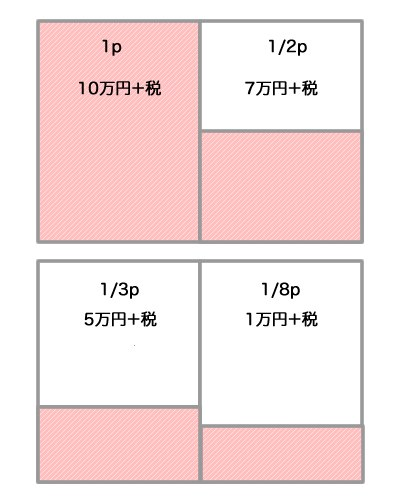

EMKC-Online::Alpha
広告を募集しています。詳しくは広告募集をご覧ください。
本紙はコミュニティベースで制作・発行を行っているフリーペーパー「EMシリーズ」の高専版です。
全国で行われている勉強会イベント「高専カンファレンス」運営有志が、高専の魅力をより多くの人に知って欲しいという思いから、関係者より技術・体験・他様々な話題の記事を募って読み応えある一冊として纏めております。
発行された冊子は高専カンファレンス参加者、各地の高専、希望企業、書店への設置等を通し、多くの方に広く配布されます。
発行に際し、広告掲載にてご協力してくださるスポンサーの方を募集しております。ぜひご一考ください。
Vol.1 2011年3月発行 5000部＋オンライン配布中
Vol.2 2012年7月発行 8000部＋オンライン配布中
EM ZEROをはじめとするEMシリーズはイベント等に合わせて刊行しております。EMシリーズに掲載する広告の体裁・広告料は次の通りです。
(※デザイン料は別途)
広告はオンライン版公開時にも、印刷版と同様に掲載致します。広告掲載を希望するスポンサーの方は、以下の編集部メールアドレスまでご連絡ください。
contact@manaslink.com
EM高専カンファレンス：全国の高専コミュニティを中心に配布
EM ZERO：全国のコミュニティを中心に配布
EM WEST：西日本のコミュニティを中心に配布
広告掲載に関するこれらの情報は媒体資料としてPDFでもご覧頂けます。